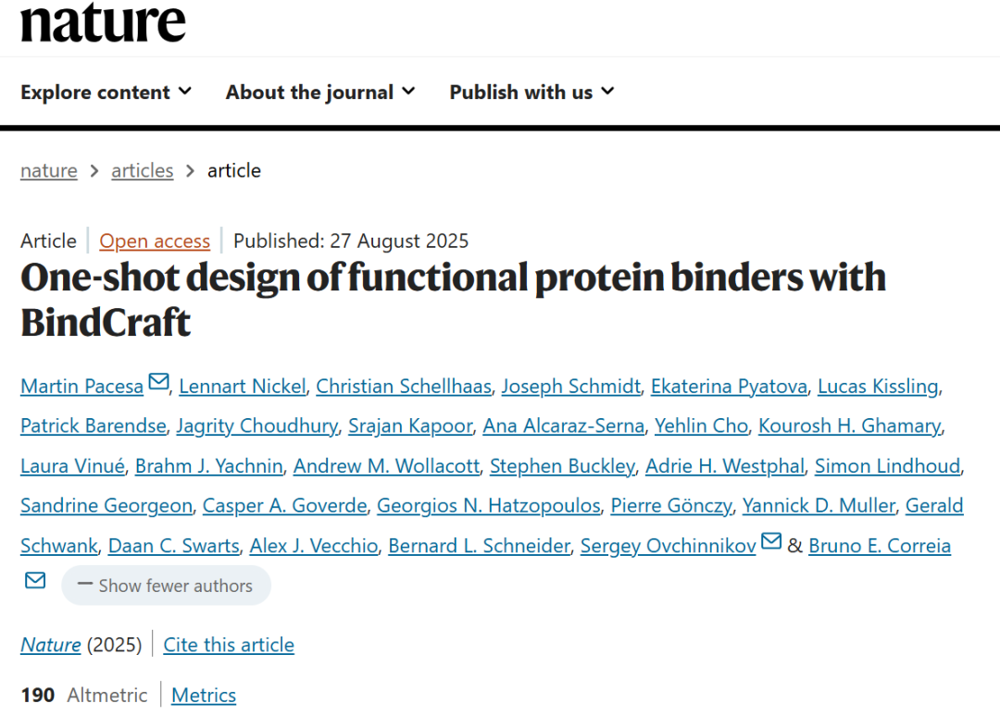
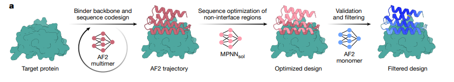
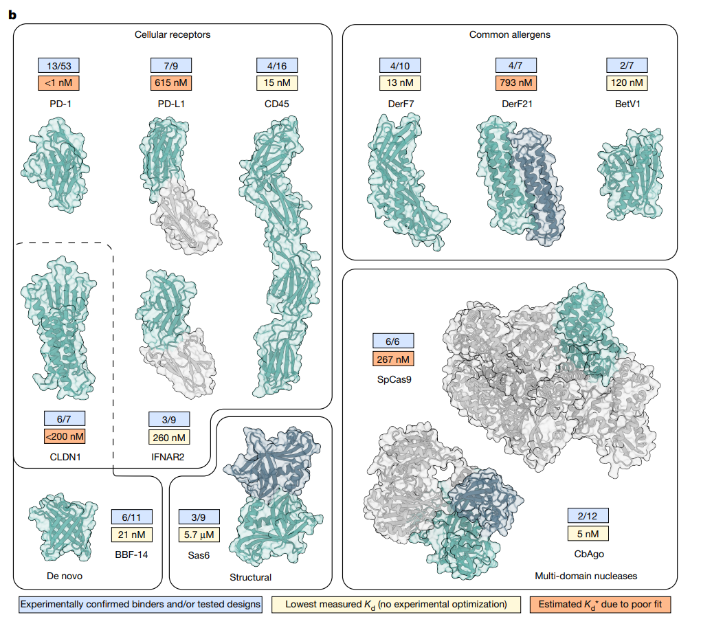

BindCraft的核心创新在于巧妙利用了AlphaFold2（AF2）的预训练权重，通过反向传播（Backpropagation） 进行“序列幻觉”（Hallucination），从头生成能与目标蛋白精准结合的分子。其自动化流程简洁高效：
输入目标蛋白结构：AF2多聚体模型生成初始结合剂骨架与序列，并同步优化结合界面。
序列优化（MPNNsol）：在固定结合界面的前提下，优化结合剂核心与表面序列，提升其表达性和稳定性。
质量过滤（AF2单体模型）：最终通过AF2单体模型进行严格过滤，确保设计出的蛋白质质量可靠。
与传统方法固定目标蛋白结构不同，BindCraft允许目标和结合剂的骨架均保持一定灵活性，从而能动态“塑形”出完美匹配的界面，更真实地模拟自然界的诱导拟合（Induced Fit）过程。

研究团队在12个极具挑战性的目标上测试了BindCraft，涵盖了细胞受体、过敏原、基因编辑酶等，仅测试少量设计（6-53个）便取得了惊人成果：
免疫检查点（PD-1/PD-L1）：
PD-1：53个设计中有13个成功，最强结合剂亲和力（Kd）<1 nM，并可有效阻断天然配体结合。
PD-L1：9个设计中有7个成功，展现出高特异性。
过敏原（Bet v1）：成功设计出能中和IgE抗体反应的结合剂，单分子即可阻断50%的IgE结合，有望用于过敏治疗。
基因编辑酶（SpCas9）：6个设计全部成功，能有效抑制Cas9的编辑活性，为精准调控基因编辑提供了新工具。
病毒重定向（AAV）：成功设计出微型结合剂，使腺相关病毒（AAV）能特异性靶向HER2/PD-L1等靶点，将基因递送效率提升高达100倍，为基因疗法开辟了新途径。

BindCraft的技术细节体现了其强大能力：
多目标损失函数：通过精心设计的9项损失函数（如结合置信度、界面接触、回旋半径等）综合优化，确保结合剂兼具高亲和力、稳定性和可溶性。
四阶段序列优化：从连续空间到离散突变，逐步细化序列，在广阔的设计空间中高效搜索最优解。
严格过滤标准：结合AF2和Rosetta等工具，设定多项严格标准（如pLDDT>0.8, i_pTM>0.5），保证输出设计的高质量和高成功率。
本地安装（推荐高性能GPU环境）
git clone https://github.com/martinpacesa/BindCraft [install_folder][install_folder] 替换为您期望的安装路径。cd [install_folder]bash install_bindcraft.sh --cuda '12.4' --pkg_manager 'conda'
--cuda：指定与您GPU驱动兼容的CUDA版本（如'11.8'或'12.4'；如不确定可留空，但可能导致错误）
--pkg_manager：包管理工具选择，支持 'conda'（默认）或更快的 'mamba'
⚠️重要提示：
安装过程将自动下载AlphaFold2权重文件（约5.3GB）
需预先获取PyRosetta学术许可证（商业用途需购买）
总代码体积仅约2MB
Colab在线版（适合快速测试）
对于不想进行本地安装的用户，可使用官方提供的Google Colab：
https://colab.research.google.com/github/martinpacesa/BindCraft/blob/main/notebooks/BindCraft.ipynb
注：Colab显存有限，仅适合小规模目标蛋白；大型复合物设计推荐使用本地高性能环境
性能优化建议：
始终将输入PDB文件裁剪至最小必要区域，可显著加速生成过程并降低显存需求
对于困难靶点，建议运行数百至数千个设计轨迹以获得最佳结果
BindCraft采用模块化的JSON配置文件系统，所有设置均可在相应目录下的配置文件中调整。
参数详解：
{"design_path": "保存设计和统计的路径","binder_name": "设计文件前缀（如'my_binder'）","starting_pdb": "目标蛋白PDB路径","chains": "目标链（如'A,B'；其余忽略）","target_hotspot_residues": "热点位点（如'1,2-10'或'A1-10,B1-20'或整个链'A'；null让AF2自动选。推荐小补丁缩小搜索）","lengths": "结合剂长度范围（如[50,100]）","number_of_final_designs": "目标通过过滤的设计数（达到停止）"}
示例：PDL1.json
{"design_path":"/content/drive/My Drive/BindCraft/PDL1/","binder_name":"PDL1","starting_pdb":"/content/bindcraft/example/PDL1.pdb","chains":"A","target_hotspot_residues":"56","lengths":[65,150],"number_of_final_designs":100}
2. 过滤设置 (settings_filters/)
示例：default_filters.json
⚠️关键指标：
pLDDT：结构置信度（0-1）
i_pTM：界面结合置信度（0-1），主要用于结果排序
i_pAE：界面对齐误差，值越低越好
Relaxed_Clashes：能量优化后的原子碰撞数
ShapeComplementarity：形状互补性分数（0-1）
n_InterfaceHbonds：界面氢键数量
Binder_Helix%/：结合剂中螺旋/β片层比例Binder_Beta%
HotspotRMSD：与原始设计轨迹的结构偏差
3. 高级设置 (settings_advanced/)
设计参数：
omit_AAs：排除的氨基酸类型（如：["CYS"]避免二硫键）
design_algorithm：设计算法，可选：
4stage：默认四阶段优化（logits→softmax→one-hot→PSSM）
2stage：快速模式
greedy：低内存但速度较慢
use_multimer_design：使用AF2-multimer进行设计（推荐）
num_recycles_design：AF2循环次数（设计/验证阶段）
损失权重：
weights_plddt (0.1)：结构置信度权重
weights_iptm (0.05)：界面结合置信度权重
weights_pae_intra (0.4)：内部结构误差权重
weights_helix (-0.3)：螺旋偏好（负值偏好β片层）
MPNN优化：
mpnn_fix_interface：固定界面残基进行序列优化
num_seqs：每个结合剂生成的序列变体数量
sampling_temp：序列采样温度（控制多样性）
高级选项：
use_rg_loss：回旋半径约束（保持结构紧凑）
use_termini_distance_loss：N/C末端距离约束（用于特定移植场景）
optimise_beta：β片层结构检测与优化
remove_unrelaxed：删除未能量优化的结构以节省空间
min_acceptance_rate：最低接受率阈值，低于此值自动停止并建议调整参数
SLURM集群环境：
sbatch ./bindcraft.slurm --settings'./settings_target/PDL1.json'本地直接运行：
conda activate BindCraftpython -u ./bindcraft.py --settings'./settings_target/PDL1.json'
注：可省略--filters和--advanced参数使用默认配置
过程：生成轨迹、MPNN优化序列、AF2验证+Rosetta分数过滤。输出：PDB、CSV（序列/分数）；可选zip动画/图。
✨BindCraft 之所以备受关注，主要源于以下几个方面的突破性优势：
精准高效的设计机制：
“一设计一结合剂”的理念，摆脱了对传统高通量筛选的依赖，大幅提升了实验命中率，显著节约了时间和资源成本。
开源易用，降低使用门槛：
代码完全开源并在 GitHub 免费提供，即使缺乏蛋白质设计经验的实验室也能快速上手，推动了方法的广泛采用。
出色的广义性与适用性：
能够覆盖从已知结合位点到未知结构，从带电表面到核酸沟槽等多种复杂场景，展现出强大的通用能力。
丰富的功能潜力与应用前景：
在研究中也展示了多项治疗应用潜力，包括过敏原中和、毒素阻断以及基因递送等，为生物医学应用提供了新思路。